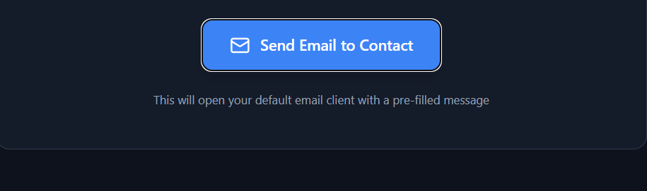

Final-Year Software Engineering student at Monash University Malaysia, seeking internship opportunities from Nov 2025 – Feb 2026.

Web-based AI health support system built with Node.js and React.js using Agile Scrum methodology.
Node.js • React • AgileDigital board game implementation with custom environmental mechanics using OOP principles.
Java • OOP • UI/UXI am a driven and detail-oriented Software Engineering student with a strong foundation in Java, Python, object-oriented programming, and team-based development. I enjoy building practical solutions and continuously improving my technical and leadership skills.
Trained and fine-tuned YOLOv8 models, worked directly with the CTO on computer vision pipelines, and supported rapid prototyping of AI solutions.
Software Engineering Year Representative, Vice Publicity Officer (Engineers Without Borders), Head of HR (Monash Indian Cultural Society).
Email: gvnaillya@gmail.com
Send Email